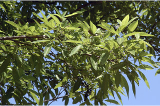
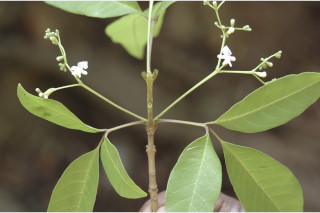
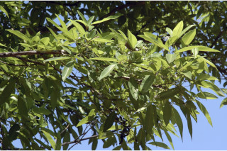
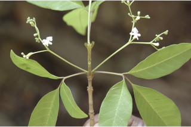
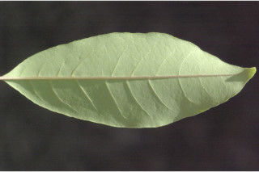
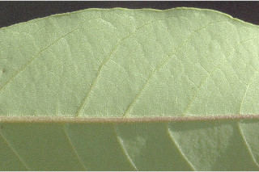
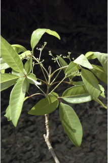
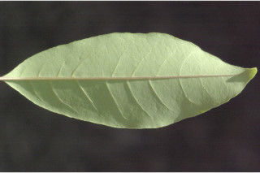
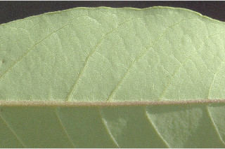
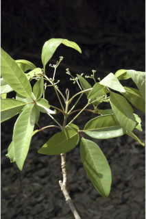

Deciduous trees, up to 15 m tall.
15 ಮೀ. ಎತ್ತರದ ಎಲೆಯುದುರುವ ಮರಗಳು.
Deciduous trees, up to 15 m tall.
இலையுதிர் மரம், 15 மீ. உயரம் வரை வளரக்கூடியது.
Bark brownish, smooth; blaze yellowish.
ತೊಗಟೆ ಕಂದು ಬಣ್ಣದಲ್ಲಿದ್ದು,ನಯವಾಗಿರುತ್ತದೆ;ಕಚ್ಚು ಮಾಡಿದ ಜಾಗ ಹಳದಿ ಛಾಯೆ ಹೊಂದಿರುತ್ತದೆ.
Bark brownish, smooth; blaze yellowish.
மரத்தின் பட்டை ப்ரவுன் நிறமானது, வழுவழுப்பானது; உள்பட்டை மஞ்சள் நிறமானது.
Young branchlets quadrangular, minutely pubescent, lenticellate.
ಕಿರುಕೊಂಬೆಗಳು 4-ಕೋನಯುಕ್ತವಾಗಿದ್ದು ಮೃದುತುಪ್ಪಳದಿಂದ ಕೂಡಿದ್ದು ಸೂಕ್ಷ್ಮವಾದ ಮೃದುತುಪ್ಪಳದಿಂದ ಕೂಡಿರುತ್ತವೆ ಹಾಗೂ ವಾಯುವಿನಿಮಯ ಬೆಂಡು ರಂಧ್ರಗಳ ಸಮೇತವಿರುತ್ತವೆ.
Young branchlets quadrangular, minutely pubescent, lenticellate.
சிறிய நுனிக்கிளைகள் குறுக்குவெட்டுத் தோற்றத்தில் நான்கு கோணங்களுடையது, நுண்ணிய உரோமங்களுடையது, பட்டைத்துளைகள் (லெண்டிசெல்லேட்) உடையது.
Leaves compound, digitate or rarely trifoliate, opposite, decussate; rachis pulvinate, planoconvex in cross section, minutely pubescent; petiolule 0.5-1.5 cm long, canaliculate, glabrous; leaflets 5 (rarely 3), lamina 7-11.5 x 2-3.5 cm, elliptic, apex acute to obtuse, base cuneate - attenuate, margin entire, chartaceous or thinly coriaceous, glaucous beneath, glabrous; midrib canaliculate above; secondary_nerves 6-14 pairs; tertiary_nerves reticulo-percurrent, not prominent.
ಎಲೆಗಳು ಸಂಯುಕ್ತ ಮಾದರಿಯವುಗಳಾಗಿದ್ದು ಬೆರಳು - ಕವಲು ಮಾದರಿ ಅಥವಾ ಅಪರೂಪವಾಗಿ 3-ಕೂಡೆಲೆಗಳನ್ನು ಹೊಂದಿರುತ್ತವೆ;ವೃಂತಗಳು ಬುಡದಲ್ಲಿ ಉಬ್ಬಿರುತ್ತದೆ, ಅಡ್ಡ ಸೀಳಿದಾಗ ಸಪಾಟ ಪೀನ ಮಧ್ಯದ ಆಕಾರ ಹೊಂದಿರುತ್ತವೆ, ಸೂಕ್ಷ್ಮವಾದ ಮೃದುತುಪ್ಪಳದಿಂದ ಕೂಡಿರುತ್ತವೆ;ಕಿರುತೊಟ್ಟುಗಳು 0.5 ರಿಂದ 1.5 ಸೆಂ.ಮೀ.ಉದ್ದ ಹೊಂದಿರುತ್ತವೆ,ಕಾಲುವೆಗೆರೆ ಸಮೇತವಿದ್ದು ರೋಮರಹಿತವಾಗಿರುತ್ತವೆ;ಕಿರುಪತ್ರಗಳು 5(ಅಪರೂಪವಾಗಿ 3) ಇದ್ದು, 7 – 11.5 X 2 – 3.5 ಸೆಂ.ಮೀ. ಗಾತ್ರ ಹೊಂದಿದ್ದು ಅಂಡವೃತ್ತದ ಆಕಾರ ಹೊಂದಿದ್ದು, ಚೂಪಾದ ಅಥವಾ ಚೂಪಲ್ಲದ ತುದಿ, ಬೆಣೆ - ಒಳಬಾಗಿದ ಬುಡ, ನಯವಾದ ಅಂಚು,ಕಾಗದವನ್ನೋಲುವ ಅಥವಾ ತೆಳು ತೊಗಲ್ಲನ್ನೋಲುವ ಮೇಲ್ಮೈ ಹೊಂದಿದ್ದು ತಳಭಾಗದಲ್ಲಿ ಮಾಸಲು ಬೂದು ಹಸಿರು ಬಣ್ಣ ಹೊಂದಿದ್ದು ರೋಮರಹಿತವಾಗಿರುತ್ತವೆ;ಮಧ್ಯನಾಳ ಮೇಲ್ಭಾಗದಲ್ಲಿ ಕಾಲುವೆಗೆರೆ ಸಮೇತವಿರುತ್ತದೆ;ಎರಡನೇ ದರ್ಜೆಯ ನಾಳಗಳು 6 ರಿಂದ 14 ಜೋಡಿಗಳಿರುತ್ತವೆ; ಮೂರನೇ ದರ್ಜೆಯ ನಾಳಗಳು ಜಾಲಬಂಧ ನಾಳ ವಿನ್ಯಾಸದಲ್ಲಿದ್ದು ಎಲೆಯ ದಿಂಡಿಗೆ ಅಡ್ಡವಾಗಿ ಕೂಡುವ ಮಾದರಿಯಲ್ಲಿದ್ದು ಪ್ರಮುಖವಾಗಿರುವುದಿಲ್ಲ.
Leaves compound, digitate or rarely trifoliate, opposite, decussate; rachis pulvinate, planoconvex in cross section, minutely pubescent; petiolule 0.5-1.5 cm long, canaliculate, glabrous; leaflets 5 (rarely 3), lamina 7-11.5 x 2-3.5 cm, elliptic, apex acute to obtuse, base cuneate - attenuate, margin entire, chartaceous or thinly coriaceous, glaucous beneath, glabrous; midrib canaliculate above; secondary_nerves 6-14 pairs; tertiary_nerves reticulo-percurrent, not prominent.
இலைகள் கூட்டிலை, கைவடிவகூட்டிலைகள் அல்லது அரிதாக மூவ்விலை கூட்டிலைகள், எதிரடுக்கமானவை, குறுக்குமறுக்கமானவை; மத்தியகாம்பு (ராக்கிஸ்) பல்வினேட், குறுக்குவெட்டுத் தோற்றத்தில் பிளேனோகான்வக்ஸ், நுண்ணிய உரோமங்களுடையது; சிற்றிலைக்காம்பு 0.5-1.5 செ.மீ. நீளமானது, குறுக்குவெட்டுத் தோற்றத்தில் கேனாலிகுலேட், உரோமங்களற்றது; சிற்றிலைகள் 5 (அரிதாக 3), இலை அலகு 7-11.5 X 2-3.5 செ.மீ., நீள்வட்ட வடிவானது, அலகின் நுனி கூரியது முதல் மெட்டையானது, அலகின் தளம் ஆப்பு வடிவானது-அட்டனுவேட், அலகின் விளிம்பு முழுமையானது, சார்ட்டோசியஸ் அல்லது மெல்லிய கோரியேசியஸ், அலகின் கீழ்பரப்பு மெழுகு பூசியது போன்றது அல்லது சாம்பல் கலந்த நீல நிறமானது (க்களாக்கஸ்), உரோமங்களற்றது; மையநரம்பு மேற்புறத்தில் அலகின் பரப்பைவிட பள்ளமானது; இரண்டாம் நிலை நரம்புகள் 6-14 ஜோடிகள்; மூன்றாம் நிலை நரம்புகள் வலைப்பின்னல்-பெர்க்கரண்ட் போன்றவை, தெளிவற்றது.
Inflorescence axillary corymbose cymes, minutely pubescent; flowers zygomorphic, sessile; corolla white with purplish pubescent; anther lobes purple.
ಪುಷ್ಪಮಂಜರಿ ಅಕ್ಷಾಕಂಕುಳಿನಲ್ಲಿನ ಮಧ್ಯಾರಂಭಿ ನೀಳಛತ್ರ ಮಾದರಿಯಲ್ಲಿರುತ್ತವೆ ಮತ್ತು ಸೂಕ್ಷ್ಮವಾದ ಮೃದುತುಪ್ಪಳದಿಂದ ಕೂಡಿರುತ್ತವೆ; ಹೂಗಳು ಉಭಯ ಪಾರ್ಶ್ವ ಅಸಮಾಂಗತೆಯುಳ್ಳ ಮಾದರಿಯಲ್ಲಿದ್ದು ತೊಟ್ಟುರಹಿತವಾಗಿರುತ್ತವೆ;ಪುಷ್ಪದಳಗಳು ಬಿಳಿಬಣ್ಣದಲ್ಲಿದ್ದು ಕೆನ್ನೀಲಿ ಮೃದುತುಪ್ಪಳದ ಸಮೇತವಿರುತ್ತವೆ;ಪರಾಗ ಕೋಶದ ಹಾಲೆಗಳು ಕೆನ್ನೀಲಿ ಬಣ್ಣದವು.
Inflorescence axillary corymbose cymes, minutely pubescent; flowers zygomorphic, sessile; corolla white with purplish pubescent; anther lobes purple.
மஞ்சரி இலைக்கோணங்களில் காணப்படுபவை, கோரியம்போஸ் சைம் வகை மஞ்சரி, நுண்ணிய உரோமங்களுடையது; மலர்கள் ஒழுங்கற்றவை (சைகோமார்பிக்), காம்பற்றது; அல்லி இதழ்கள் வெள்ளை-பர்புள் நிறமான உரோமங்களுடையது; மகரந்தபை பர்புள் நிறமானது.
Drupe, smooth, obovoid, purplish black; seeds 4.
ಡ್ರೂಪ್ಗಳು ನಯವಾಗಿದ್ದು, ಅಂಡಾಕಾರದಲ್ಲಿದ್ದು,ಕೆನ್ನೀಲಿ ಮಿಶ್ರಿತ ಕಪ್ಪು ಬಣ್ಣ ಹೊಂದಿರುತ್ತವೆ;ಬೀಜಗಳ ಸಂಖ್ಯೆ 4.
Drupe, smooth, obovoid, purplish black; seeds 4.
உள்ளோட்டுத்தசைகனி (ட்ரூப்), வழுவழுப்பானது, தலைகீழ் முட்டை வடிவானது, பர்புள்-கருப்பு நிறமானது; விதைகள் 4.
 



 




